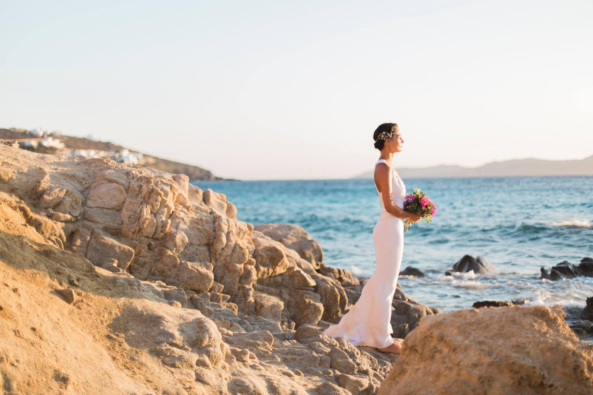

Weddings
European Destination Wedding Photography
6 October 2015

One of the most incredible parts of being a wedding photographer in London is that the travel opportunities across the UK and Europe are unbeatable. Reasonably priced tickets, the ability to travel via train or flight, and in less than a few hours I can be in a paradise setting completely different from London.
It makes being a destination wedding photographer in Europe so easy and so fun! This summer while travelling to Mykonos for a family holiday I decided to organize a bridal shoot (of course to my husband’s chagrin–but do you really think I could put down my camera for 10 days straight? c’mon!) to show off some of the islands’
beauty for Brides who might be considering a Greek Elopement or destination wedding in the Greek Islands. I was most inspired by the characteristically crisp color palate of the Greek islands–the white stucco architecture, the many shades of turquoise and blue, and the pretty pink indigenous flowers all over the island.
I decided to go for a sleek and minimalistic look with a touch of classic Greek elements. Amazingly, Style Me Pretty (ie my personal bible for everything wedding related) published these images and you can have a look at their take of the shoot HERE . I am so constantly inspired by the work I see on Style Me Pretty and I am completely honored to see my work on such a beautiful blog!
I am so excited that I already have plans to return to the Greek Islands twice in the next year to photograph two separate weddings (one is for a secret elopement–shhhhh!!!). And If I can convince my husband there will be no work involved this time I may even be able to make it three ;)
Of course this shoot would never have been possible without the gorgeous elements from some very talented vendors including: Bridal Gown: La Poesie for Heart Alfutter Bridal Headdress: Hermione Harbutt Stationary: Beyond Vintage Styling: Aurelie Chuard Venue: Saint John Hotel Villas & Spa
To book your European destination wedding photography with me, please send me an email at amy@fantonphotography.com or give me a call on (44) 07462907790. I look forward to working with you!!!